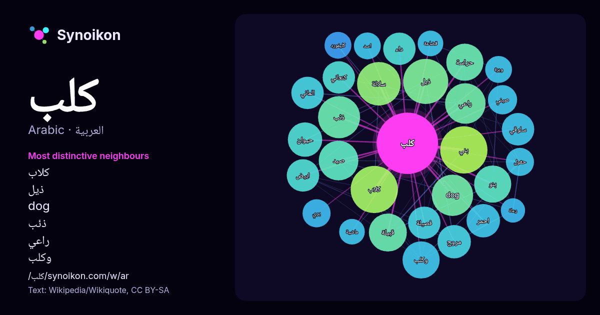

العربية · كلمة شائعة
كلب
“dog” · الكلمات الموجودة حولها في 881 ورودًا من ويكيبيديا, Wikiquote.

الجيران الأكثر تميّزًا
- كلاب 30×
- ذيل 28×
- dog 27×
- ذئب 27×
- راعي 24×
- وكلب 22×
- سلالة 21×
- بنو 20×
- صيد 18×
- حراسة 18×
- مروج 17×
- كنعاني 17×
- سلوقي 17×
- قبيلة 15×
- داء 14×
- بني 14×
- حيوان 14×
- وبرة 12×
- فصيلة 12×
- كليفورد 12×
× = كم مرة أكثر مما في نصوص ويكيبيديا العامة.
الجيران الأكثر تكرارًا
- بني 34
- كلاب 34
- ذيل 31
- سلالة 29
- اسم 28
- نوع 28
- ذئب 27
- dog 26
- راعي 25
- صيد 24
- قبيلة 22
- بنو 21
- حراسة 21
- كبير 21
- وكلب 21
- بحر 19
- حيوان 18
- فيلم 18
- احمر 17
- علمي 17
في السياق
- الطباع والمهمات، منها: كلب الصيد وكلب الحقول وكلب الرعاة وكلب الحراسة والكلب البوليسي وكلب جراي هاوند وكلب مرافقة المكفوفين وكلب الزلاقات؛ الذي يستعمل Wikipedia snippets · كلب
- بنو كلب قبيلة عربية من قضاعة، سكنت بشكل رئيسي في الصحراء والسهوب في شمال غرب شبه الجزيرة العربية ووسط سوريا. انخرطت قبيلة بني كلب في السياسة القبلية على Wikipedia snippets · بنو كلب
- جنس الكلب (اللاتينية: Canis) هو أحد أجناس فصيلة الكلبيات، الذي يحوي ما بين 7 إلى 10 أنواع باقية، بما فيها الكلاب والذئاب والقيوطات وبنات آوى والكثير Wikipedia snippets · كلب (جنس)
- عنصرا مهماً في الحياة البيئية في معظم دول الوطن العربي. لا علاقة لهذا الكلب بالكلب السلوغي المغربي (بالإنجليزية: Sloughi) الذي يتواجد ببراري الطوارق على Wikipedia snippets · كلب سلوقي
- كلب كَنغال هو نوع سلالة من الكلاب كبير الحجم ويستخدم ل حراسة الماشية موطنه الأصلي وسط تركيا. الراعي الأناضولي أقباش (كلب) Orhan.، Yilmaz (2007). The Turkish Wikipedia snippets · كلب كنغال
- كلب الست تعديل - تعديل مصدري - تعديل ويكي بيانات كلب الست قصيدة ساخرة من أشهر قصائد الشاعر الشعبي المصري أحمد فؤاد نجم، نظمها عام 1952. وتحكي القصيدة حادثة Wikipedia snippets · كلب الست (قصيدة)
- داء الكَلَب أو داء السّعَر أو السُّعار (الإنجليزية: Rabies) مرض فيروسي قاتل يصيب الدماغ منتقلا له عبر الجهاز العصبي المركزي ويسبب الوفاة الأكيدة في حالة Wikipedia snippets · داء الكلب
- متعلّقة بعنوان كلب حراسة. إذا وصلت لهذه الصفحة عبر وصلة داخليّة، فضلا غيّر تلك الوصلة لتقود مباشرة إلى المقالة المعنيّة. كلب حراسة (حيوان) هو الكلب الذي يوفر Wikipedia snippets · كلب حراسة (توضيح)
كلمات أخرى
- أغنية
- إله
- تاريخ
- جبل
- جرس
- جزيرة
- جسر
- حديقة
- حصان
- حقيقة
- حياة
- خبز
- خريطة
- خريف
- ذهب
- زمن
- ساعة
- شاي
- شتاء
- صحة
- صحراء
- صمت
- صيف
- طبيعة
- طريق
- طعام
- ظل
- عائلة
- عاصفة
- عسل
- علم
- عمل
- غابة
- فن
- قطار
- قطة
- قلب
- قوة
- لغة
- ماء
- مال
- مدينة
- مرآة
- مطر
- ملح
- مناخ
- موت
- نجم
- والدة
حُسبت مسبقًا في 2026-10-09 بالإعدادات الافتراضية (±5 كلمات، مدوّنة متوسطة). يمكن للخريطة التفاعلية تحديثها ببيانات حية.
واجهة مترجمة آليًا؛ نرحب بالتصحيحات.